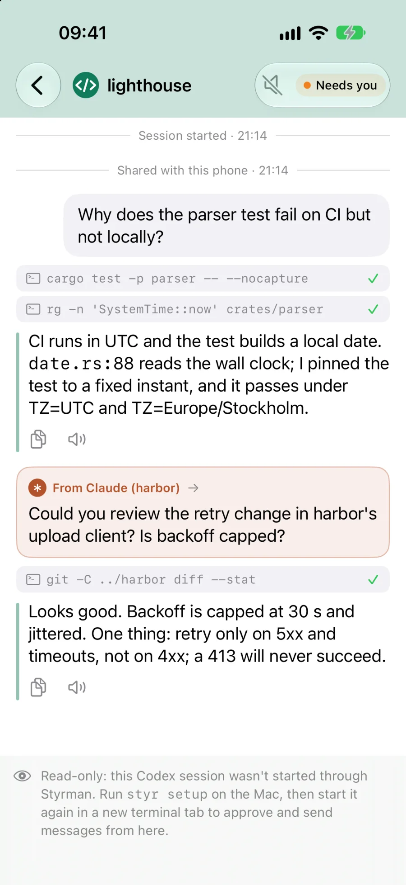

Agent to agent
Let your agents consult each other
Ask Claude to get a second opinion from Codex. It sends the question with styr ask, Codex answers in its own session, and the reply comes back to Claude. You follow both sides on your phone.
$ styr ask codex "Is backoff capped?"
Agents only do this when you ask them to. Approvals stay exactly where they were.
